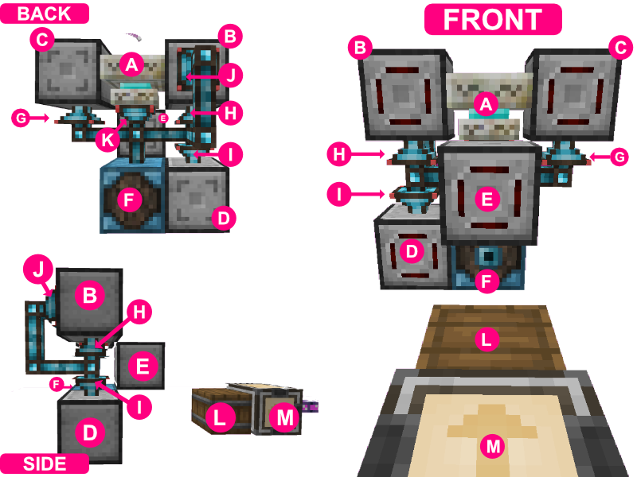
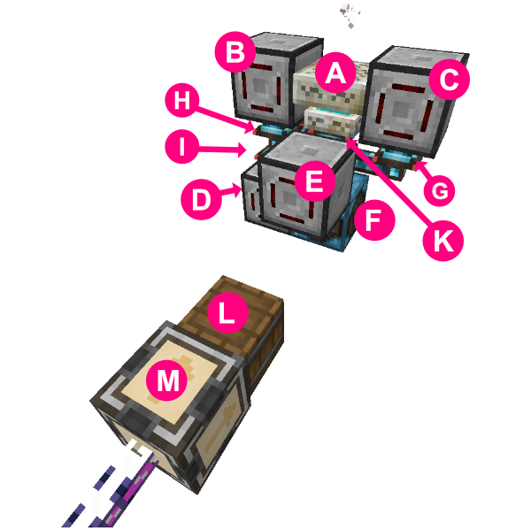
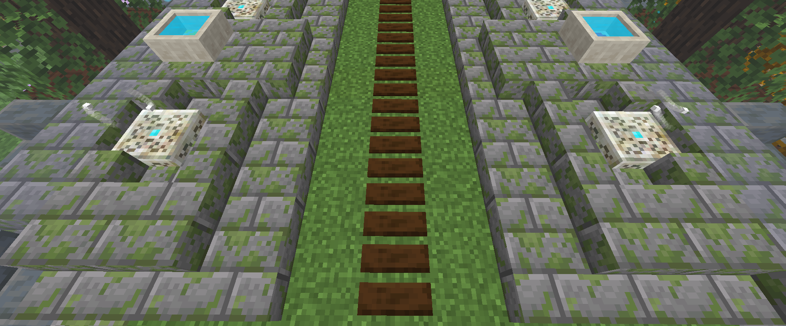
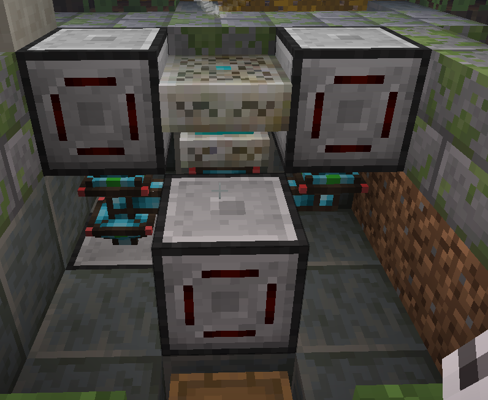
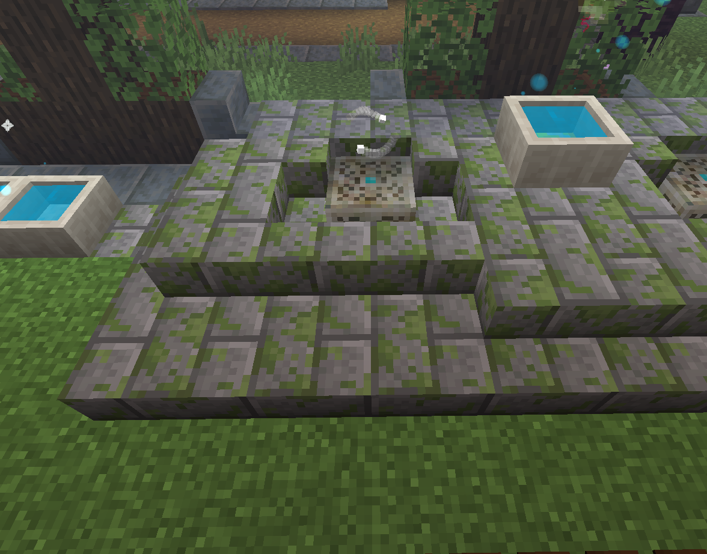

Automating the Runic Altar with Applied Energistics, Modular Routers, and Integrated Dynamics
This article describes how I automated the Botania Runic Altar with Applied Energistics, Modular Routers, and Integrated Dynamics. There are certainly other ways to automate this (including using no additional mods outside of Botania), but this is how I did it.
Required mods
- Botania
- Modular Routers
- Integrated Dynamics
- (Optional) Applied Energistics
- This example uses Applied Energistics, but it's only purpose as far as this build is concerned is to provide it with the ingredients. This exact setup would likely work with any mod that can provide the exact ingredients into it's chest (Refined Storage, for example).
The Build
 
- A: Botania Runic Altar (the thing we are automating)
- B: "Placer" Modular Router. This one places ingredients on the altar, and places the final Living Stone block. By having it "right click" the blocks into the altar, instead of using a dropper or Botania Open Crate, we can more easily "vacuum" up the final crafted rune without worrying that any ingredients from the next craft might get vacuumed up, which would break the craft and leave the system in a broken state.
- C: "Wand" Modular Router. This one right clicks the Runic Altar with a Wand of the Forest when the crafted rune is ready.
- D: "Distributor" Modular Router. This one passes items to Modular Router B to place on the altar, ensuring that Living Stone is kept behind until the altar is ready. It's possible to make this setup without this extra Modular Router, but this ensures that if it happens to take more than 5 minutes to charge the altar with mana, the Living Stone won't despawn, because it's only added when needed.
- E: "Vacuum" Moduler Router. This one "vacuums" up the newly crafted rune, as well as any runes that were used as ingredients but were not consumed.
- F: Integrated Dynamics Variable Store.
- G: Integrated Dynamics Redstone Writer. Pointed at the bottom side of C: "Wand" Modular Router, this one lets the "Wand" modular router know when the Runic Altar is finished crafting, and is ready to be right clicked with a Wand of the Forest.
- H: Integrated Dynamics Redstone Writer.
- I: Integrated Dynamics Redstone Writer.
- J: Integrated Dynamics Redstone Reader
- K: Integrated Dynamics Redstone Reader
- L: Chest. This is where the raw ingredients are deposited by the Applied Energistics system.
- M: Applied Energistics Pattern Provider. This allows an Applied Energistics system to auto-craft. It holds the pattern for the rune, and it deposits the ingredients into the chest when a craft is triggered. It is set to lock until the completed item is returned, to ensure that only one item at a time is crafted - this allows the system to work for anyrune without extra fiddling.
Parts List
- Botania
- 1 Runic Altar
- 1 Wand of the Forest
- Modular Routers
- 4 Modular Routers
- 1 Vacuum Module
- 2 Activator Modules
- 1 Dropper Module
- 2 Puller Module Mk2
- 2 Sender Module Mk2
- 2 Camoflauge Upgrades (Optional)
- 1 Tag Filter
- Integrated Dynamics
- 2 Redstone Readers
- 3 Redstone Writers
- 1 Variable Store
- 5 Logic Cable
- 7 Variable cards
- A Logic Programmer or a Portable Logic Programmer
- Suggested: A Labeller, to label your variables
- Minecraft
- 1 Chest or Barrel
- If using Applied Energistics:
- 1 Pattern Provider
- 1 Pattern, encoded with a Processing Recipe for each rune you wish to auto-craft.
Component details
A: Botania Runic Altar
Just a Runic Altar. There is nothing to configure here, so this section will be very brief. Make sure that while you are building this setup that stray items don't drop on it, or it will pick them up and it might be difficult to tell that your setup is broken (especially if it's something barely visible like Mana Glass)
B: "Placer" Modular Router (left side)
This Modular Router places the ingredients onto the Runic Altar. It receives items from another Modular Router, so it doesn't need to worry about pulling items from anywhere.
- This Modular Router is set to Redstone: High, so that it only functions when it receives a redstone signal.
- Eco-Mode is not neccessary (but will help reduce lag on a server, so it's a good idea to turn it on)
- This Modular Router contains two modules:
- An Activator Module, which "right clicks" ingredients into the Runic Altar.
- A Dropper Module, which drops the final Living Stone at the end, which needs to be dropped into the world rather than right-clicked in.
- The 9 Speed Upgrades in the example image are not required (they just make it work faster).
By using an Activator Module to deliver ingredients to the Runic Altar, we reduce the number of items that are ever dropped into the world, which can create lag and can cause issues if items disappear "in flight" due to server mods, villagers eating food items, players with "magnet" type equipment, etc. My setup is in an active village, so dropped food items often disappear, and this helped avoid this issue.
Modules in "B" Modular Router
Activator Module ("B" Modular Router)
- Is in Blacklist mode, with Living Stone in the blacklist.
- Is set with the default right-click action and settings - no changes needed from the defaults.
- Has it's direction set towards the Runic Altar (to the right, if you are building it exactly like the images in this article)
Dropper Module ("B" Modular Router)
- Is in Whitelist mode, with Living Stone in the whitelist. All other settings are default.
- Has it's direction set towards the Runic Altar (to the right, if you are building it exactly like the images in this article)
C: "Wand" Modular Router (right side)
This module right clicks the Runic Altar with a Wand of the Forest, when the crafting has reached that point.
- This Modular Router is set to Redstone: High, so that it only functions when it receives a redstone signal.
- This Modular Router must have a Wand of the Forest in it's inventory slot.
- This Modular Router has 1 module, a single Activator Module
Activator Module ("B" Modular Router)
This handles right clicking the Runic Altar.
- Has it's direction set towards the Runic Altar (to the left, if you are building it exactly like the images in this article)
- All other settings are default.
D: "Distributor" Modular Router (bottom-left)
E: "Vacuum" Moduler Router (Middle foreground)
This Modular Router picks up the crafted runes once they are complete. The Runic Altar will drop them into the world around itself, so a "Vacuum" capability is required.
You could easily replace this with a HopperHock, or any other vacuum chest, or other mechanism to pick up dropped items (Rats, Golems, etc). You'll want to blacklist Living Stone, so you don't pick up the final Living Stone that must be dropped onto the Runic Alter to finish the crafting process.
This Modular Router has two modules:
- A Vacuum Module to pick up dropped items
- A Sender Mk2 Module to send the picked up items back to the AE2 sysetem (or wherever you want the end result items to go)
Vacuum Module ("E" Vacuum Router)
This handles right clicking the Runic Altar.
- Has it's direction set up. If you place yours in a different place than I did, adjust this direction accordinly.
- This module is set to whitelist mode, with a Tag Filter (details below).
- The module has 3 Range Down Augments to limit it's range, so it doesn't interfere with other nearby automations, or other machines that drop items (like a Petal Apothacary, which you might put near your Runic Altar)
- All other settings are default.
Tag Filter configuration for "E" Vacuum Router
The Tag Filter should be configured with the tag botania:runes. To do this, craft a rune manually, then craft a new tag filter. Right click the tag filter and put the rune in the slot at the top. Use the dropdown box to select botania:runes, then click the "+" button to add that tag to the list. Do not select the mythicbotany:runes one you might see (if you also have Mythic Botany installed), because this will cause the system to fail to pick up normal Botania runes (botania:runes will include MythicBotany runes as well)
Sender Mk2 Module ("E" Vacuum Router)
This sends any picked up item back to your base's inventory - in my case, to the Applied Energistics 2 Pattern Provider, which will automatically insert the items back into storage.
- With this module in your hand, shift+right click the block where you want the final crafted rune to be sent to. In my case, this is the Pattern Provider.
- DO NOT SEND ITEMS BACK TO THE INPUT CHEST! This will cause them to get re-imported into the Runic Altar, and it will break until you manually clean out the items from the Runic Alter. If you are not sending back to an AE2 system like I am, send the output to a different chest, or some other storage.
- All other settings are default.
F: Integrated Dynamics Variable Store
You'll want to place all the blocks before you start collecting variables to put in here. There is a section below that explains what that means, if you have never used Integrated Dynamics before.
The variables we'll eventually have in here are:
- An Integer of 0 (zero)
- An Integer of 2 (two)
- A reference to the Comparator value of the Redstone Reader attached to the Runic Altar
- A reference to the Comparator value of the Redstone Reader attached to the "Placer" Modular Router
The "Part ID" and "Variable ID" values in the screenshot are not important, your numbers will be different than mine were.
The positioning of the variables in the Variable Store do not matter at all.
How to collect the correct variable cards while you build
Don't try to set up variable cards while you build - place down all of the blocks and make sure they are in the correct spots, then come back and set up the variable cards.
If you move any of the Integrated Dynamics blocks (including the cables), it may break your variables, and you may need to set them up again.
G: Integrated Dynamics Redstone Writer (Bottom side of "Wand" MR)

H: Integrated Dynamics Redstone Writer (Bottom side of "Placer" MR)
I: Integrated Dynamics Redstone Writer (Top side of "Distributor" MR)
J: Integrated Dynamics Redstone Reader (Back side of "Placer" MR)
K: Integrated Dynamics Redstone Reader (bottom side of Runic Altar)
L: Chest
- Just a normal chest. Any block with an inventory will work here, including all types of chests (including modded ones), barrels, shulker boxes, sophisticated backpacks, hoppers, etc. It needs to hold all of the ingredients for the rune you are trying to craft, so it should have at least 8-10 slots.
- The position of this chest (and the AE2 Pattern Provider) do not matter, as long as they are within range of the "Distributor" "D" Modular Router. The puller modules used in this tutorial do not require line-of-sight, and have a maximum range of 12 (or 24 with max range upgrades)
M: Applied Energistics Pattern Provider
Just a normal pattern provider, which as of the version of Applied Energistics I'm using, is the standard way for an AE system to provide crafting ingredients for auto-crafting jobs. If you are not familliar with Applied Energistics, this block contains a "pattern" for each type of item it can craft, and it provides the ingredients for any requested items into the chest.
You will want to set it to Lock until it receives the crafted item back. This can be done by clicking into the Pattern Provider's interface and using the small buttons on the left edge. This setting ensure that the AE system only deposits the ingredients for one item at a time, and won't deposit any more until it receives the crafted item back and knows that it's finished.
If you are not using Applied Energistics, you will need to find a way to insert the ingredients for exactly 1 (one) rune at a time into the chest "L". You can probably do this with mods similar to Applied Energistics, such as Refined Storage, but since I am an Applied Energistics user, I am not familliar with other mods that do the same thing.
How to get the Integrated Dynamics variables
Putting this in a base
This setup can be fairly easily hidden underground, with the two above-ground Modular Routers using camoflauge upgrades to hide as whatever block makes sense (in the example image they are mossy cobblestone stairs, specifically a corner piece, to hide the Integrated Dynamics Redstone Reader on the back of them).
This setup is fairly compact, and can be easily scaled out to as many as you want. I use 4 of these, each with different runes that it has the patterns for so that it can make multiple runes at the same time.
 